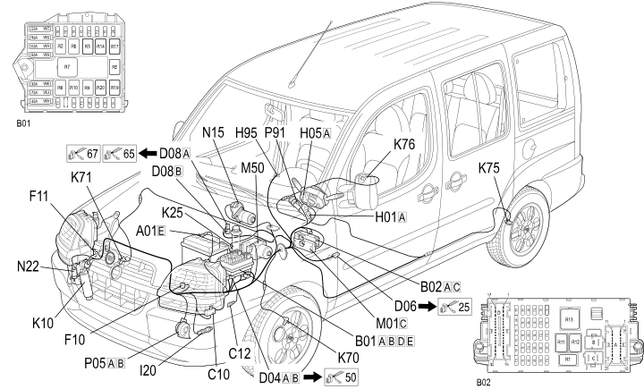

12 FRONT
- Path
- Electrical equipment > 2 WIRING > 12 FRONT
- Kind
- wiring harness
- Applies to
- engines: 1.2 8v, 1.6 16v, 1.3 JTD 16V, 1.9 JTD 8V, 1.9 DIESEL; production: da 12/03; only with equipment: BIPOWER
- Interactive page
- https://sloeber94.github.io/elrnDB-fDbl/en/#/223003565
Applies to: engines: 1.2 8v, 1.6 16v, 1.3 JTD 16V, 1.9 JTD 8V, 1.9 DIESEL; all production periods; only with equipment: BIPOWER

Topics that link to this page (114)
- B001B JUNCTION UNIT (FRONT)
- B001D JUNCTION UNIT (FRONT)
- B001E JUNCTION UNIT (FRONT)
- B1B ENGINE COMPARTMENT JUNCTION UNIT ( FRONT )
- B1D ENGINE COMPARTMENT JUNCTION UNIT ( FRONT )
- B1E ENGINE COMPARTMENT JUNCTION UNIT ( FRONT )
- B1E ENGINE COMPARTMENT JUNCTION UNIT ( FRONT )
- B002A JUNCTION UNIT UNDER DASHBOARD (FRONT)
- B002A JUNCTION UNIT UNDER DASHBOARD (FRONT)
- B002A JUNCTION UNIT UNDER DASHBOARD (FRONT)
- B002A JUNCTION UNIT UNDER DASHBOARD (FRONT)
- B002A JUNCTION UNIT UNDER DASHBOARD (FRONT)
- B002C JUNCTION UNIT UNDER DASHBOARD (FRONT)
- B2A JUNCTION UNIT UNDER DASHBOARD ( FRONT )
- B2A JUNCTION UNIT UNDER DASHBOARD ( FRONT )
- B2A JUNCTION UNIT UNDER DASHBOARD ( FRONT )
- B2A JUNCTION UNIT UNDER DASHBOARD ( FRONT )
- B2A JUNCTION UNIT UNDER DASHBOARD ( FRONT )
- B2C JUNCTION UNIT UNDER DASHBOARD ( FRONT )
- C010 FRONT LEFT EARTH (FRONT)
- C010 FRONT LEFT EARTH (FRONT)
- C10 FRONT LEFT EARTH ( FRONT )
- C10 FRONT LEFT EARTH ( FRONT )
- C012 ABS FRONT EARTH (FRONT)
- C12 ABS FRONT EARTH ( FRONT )
- D001 FRONT/FACIA JUNCTION (FRONT)
- D004A FRONT/ENGINE JUNCTION (FRONT)
- D004A FRONT/ENGINE JUNCTION (FRONT)
- D004A FRONT/ENGINE JUNCTION (FRONT)
- D004A FRONT/ENGINE JUNCTION (FRONT)
- D004B FRONT/ENGINE JUNCTION (FRONT)
- D004B FRONT/ENGINE JUNCTION (FRONT)
- D004B FRONT/ENGINE JUNCTION (FRONT)
- D004B FRONT/ENGINE JUNCTION (FRONT)
- D4A FRONT/ENGINE COUPLING ( FRONT )
- D4A FRONT/ENGINE COUPLING ( FRONT )
- D4A FRONT/ENGINE COUPLING ( FRONT )
- D4A FRONT/ENGINE COUPLING ( FRONT )
- D4B FRONT/ENGINE COUPLING ( FRONT )
- D4B FRONT/ENGINE COUPLING ( FRONT )
- D4B FRONT/ENGINE COUPLING ( FRONT )
- D4B FRONT/ENGINE COUPLING ( FRONT )
- D006 REAR / ENGINE COMPARTMENT JUNCTION (FRONT)
- D6 FRONT REAR COUPLING ( FRONT )
- D7 ENGINE/ALTERNATOR COUPLING ( FRONT )
- D008A FRONT/AIR CONDITIONING - HEATER COUPLING (FRONT)
- D008B FRONT/AIR CONDITIONING - HEATER COUPLING (FRONT)
- D8A FRONT/AIR CONDITIONING - HEATER COUPLING ( FRONT )
- D8B FRONT/AIR CONDITIONING - HEATER COUPLING ( FRONT )
- F010 LEFT HEADLAMP (FRONT)
- F10 LEFT HEADLAMP ( FRONT )
- F011 RIGHT HEADLAMP (FRONT)
- F11 RIGHT HEADLAMP ( FRONT )
- F015 LEFT FOG LAMP (FRONT)
- F016 RIGHT FOG LAMP (FRONT)
- H001A IGNITION SWITCH (FRONT)
- H1A IGNITION SWITCH ( FRONT )
- H005A STEERING COLUMN SWITCH UNIT (FRONT)
- H5A STALK UNIT ( FRONT )
- H095 PETROL/METHANE SWITCH (FRONT)
- H95 PETROL/METHANE SWITCH ( FRONT )
- I020 REVERSING LIGHTS SWITCH (FRONT)
- I20 REVERSING LIGHTS SWITCH ( FRONT )
- I20 REVERSING LIGHTS SWITCH ( FRONT )
- I030 BRAKE PEDAL SWITCH (FRONT)
- I030 BRAKE PEDAL SWITCH (FRONT)
- I30 BRAKE PEDAL SWITCH ( FRONT )
- I30 BRAKE PEDAL SWITCH ( FRONT )
- I30 BRAKE PEDAL SWITCH ( FRONT )
- I30 BRAKE PEDAL SWITCH ( FRONT )
- I30 BRAKE PEDAL SWITCH ( FRONT )
- I031 CLUTCH PEDAL SWITCH (FRONT)
- I031 CLUTCH PEDAL SWITCH (FRONT)
- I31 CLUTCH PEDAL SWITCH ( FRONT )
- I31 CLUTCH PEDAL SWITCH ( FRONT )
- K010 FOUR STAGE PRESSURE SWITCH (FRONT)
- K10 4 STAGE PRESSURE SWITCH ( FRONT )
- K10 4 STAGE PRESSURE SWITCH ( FRONT )
- K025 BRAKE FLUID LEVEL SENSOR (SWITCH) (FRONT)
- K25 BRAKE FLUID LEVEL (SWITCH) SENSOR ( FRONT )
- K055 ACCELERATOR PEDAL POTENTIOMETER (FRONT)
- K55 ACCELERATOR PEDAL POTENTIOMETER ( FRONT )
- K55 ACCELERATOR PEDAL POTENTIOMETER ( FRONT )
- K55 ACCELERATOR PEDAL POTENTIOMETER ( FRONT )
- K55 ACCELERATOR PEDAL POTENTIOMETER ( FRONT )
- K070 LEFT. FRONT WHEEL SENSOR FOR ABS (FRONT)
- K70 LEFT FRONT WHEEL SENSOR FOR ABS ( FRONT )
- K70 LEFT FRONT WHEEL SENSOR FOR ABS ( FRONT )
- K071 RIGHT. FRONT WHEEL SENSOR FOR ABS (FRONT)
- K71 RIGHT FRONT WHEEL SENSOR FOR ABS ( FRONT )
- K075 REAR WHEEL SENSOR LEFT FOR ABS (FRONT)
- K75 LEFT REAR WHEEL SENSOR FOR ABS ( FRONT )
- K076 RIGHT REAR WHEEL SENSOR FOR ABS. (FRONT)
- K76 RIGHT REAR WHEEL SENSOR FOR ABS ( FRONT )
- K175 DRIVER SIDE FRONT AIR BAG SENSOR (FRONT)
- M001C BODY COMPUTER (FRONT)
- M001C BODY COMPUTER (FRONT)
- M001C BODY COMPUTER (FRONT)
- M1C BODY COMPUTER ( FRONT )
- M050 ABS CONTROL UNIT (FRONT)
- M50 ABS CONTROL UNIT ( FRONT )
- M50 ABS CONTROL UNIT ( FRONT )
- N015 WINDSCREEN WIPER MOTORS (FRONT)
- N15 WINDSCREEN WIPER MOTOR ( FRONT )
- N022 WINDSCREEN/REARSCREEN ELECTRIC WASHER PUMP MOTOR (FRONT)
- N22 WINDSCREEN/REARSCREEN ELECTRIC WASHER PUMP MOTOR ( FRONT )
- P005A SINGLE-TONE HORN (FRONT)
- P005B SINGLE-TONE HORN (FRONT)
- P5A SINGLE-TONE HORN ( FRONT )
- P5B SINGLE-TONE HORN ( FRONT )
- P091 AERIAL FOR FIAT-CODE (FRONT)
- P91 AERIAL FOR FIAT-CODE ( FRONT )
- P093 RECEIVER AERIAL FOR ALARM AND CENTRAL LOCKING (FRONT)
- P93 AERIAL FOR ALARM AND CENTRAL LOCKING RECEIVER ( FRONT )